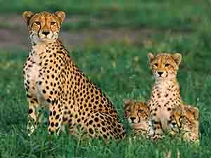

Cheetah
The cheetah is the fastest land animal in the world, reaching speeds of up to 113km/h. They can accelerate from 0 to 100km/h in just 3 seconds.
- SCIENTIFIC NAME : Acinonyx jubatus
- SIZE: 3.5 to 4.5 ft; tail, 25.5 to 31.5 in
- AVERAGE LIFESPAN: 10 - 12 years
- DIET: Carnivores
The cheetah is the world's fastest land mammal. With acceleration that would leave most automobiles in the dust, a cheetah can go from 0 to 60 miles (96 kilometers) an hour in only three seconds. These big cats are quite nimble at high speed and can make quick and sudden turns in pursuit of prey. Speed and Hunting Before unleashing their speed, cheetahs use exceptionally keen eyesight to scan their grassland environment for signs of prey—especially antelope and hares. This big cat is a daylight hunter that benefits from stealthy movement and a distinctive spotted coat that allows it to blend easily into high, dry grasses.